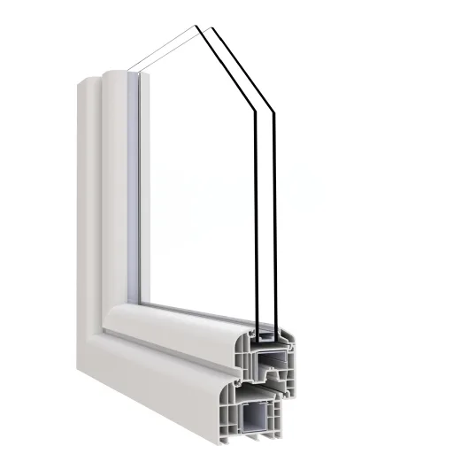
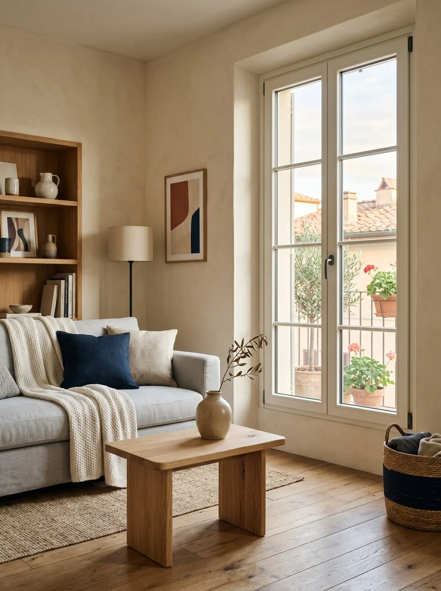
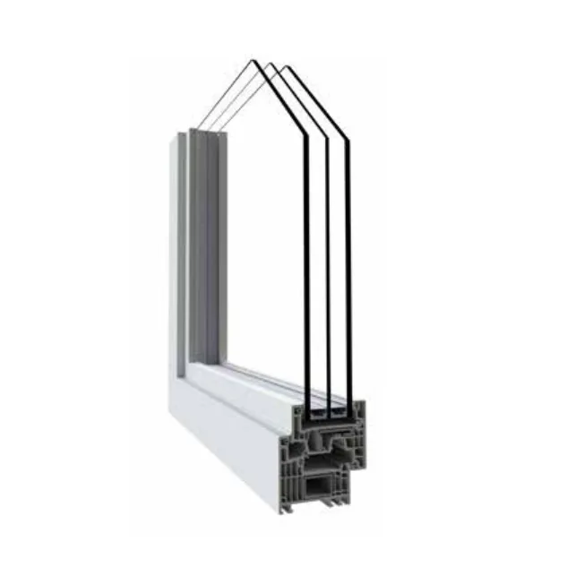

cod. IN'ALPHA 70
Essenziale
Il PVC ben fatto
Sei camere, due guarnizioni, profondità fino a 80 mm. Uw fino a 0,9 W/m²K, tenuta all'acqua E1500, vento C5, 44 dB.
Il massimo isolamento per euro speso
Il PVC moderno isola molto, non chiede manutenzione e costa meno.
Case in affitto, seconde case, riqualificazioni con budget definito, sostituzioni su misure standard. Quando conta il rapporto fra isolamento e spesa.
Il PVC è uno dei materiali più isolanti che esistano: a parità di spesa, sul fronte termico è spesso il più efficace. Non va verniciato e si pulisce con un panno.
Ha una caratteristica da tenere presente: si dilata con il calore più dell'alluminio. Su ante molto grandi o su facciate esposte a sud il progetto va fatto con più attenzione, e te lo diciamo prima di firmare.
Nella nostra officina di Vigano di Gaggiano, 4.000 m² fra showroom e produzione, nascono serramenti, persiane, grate e lavori su misura. Colori, finiture, misure e dettagli li decidi tu: ti aiutiamo a personalizzarlo.
E lo montano i nostri posatori interni. Il mercato lavora quasi sempre con squadre esterne; noi no, perché la differenza la fa il controllo dei dettagli.

Il PVC ben fatto
Sei camere, due guarnizioni, profondità fino a 80 mm. Uw fino a 0,9 W/m²K, tenuta all'acqua E1500, vento C5, 44 dB.
Il massimo isolamento per euro speso
Il PVC al massimo
Linee squadrate e sezioni minimali per più luce. Uf 1,0 W/m²K, 0,92 con ecorinforzi; 44 dB, vento C5. La gamma più ampia di decorativi.
Chi punta al massimo restando nel PVCValori «fino a» dichiarati nelle schede tecniche dei sistemi. I dati certificati del tuo serramento dipendono da misure e vetro: li trovi nella DOP che ti consegniamo.
Ho sostituito le finestre in PVC, molto belle, rifiniture a perfezione.Michele B. · Recensione Google
Da Gaggiano a tutta Milano e alle province di Monza e Brianza, Como, Lecco e Pavia. E non solo: con i nostri tecnici e i nostri posatori.

Se hai le misure, portale: ti diamo un'idea più precisa. Come prenderle.